üçã Lim√≥n
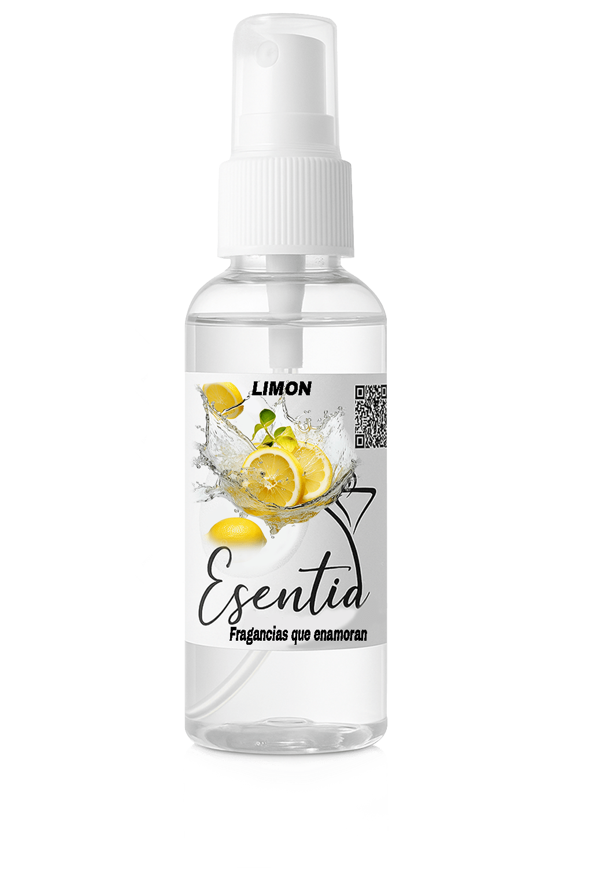üçä Naranja
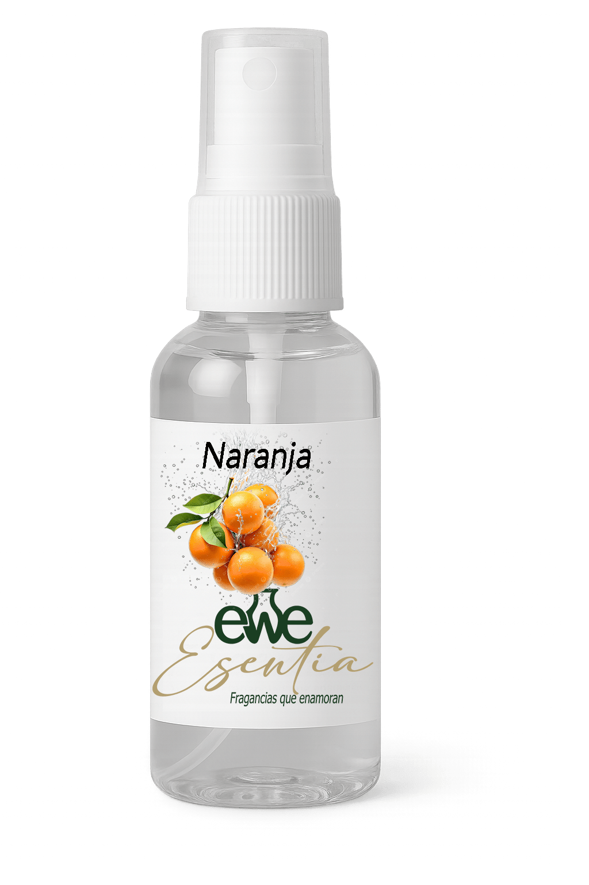üåø Eucalipto
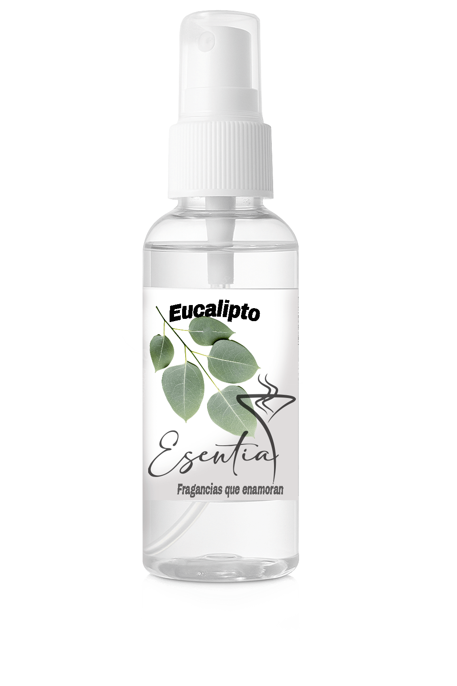üç¨ Chocolate 50ml
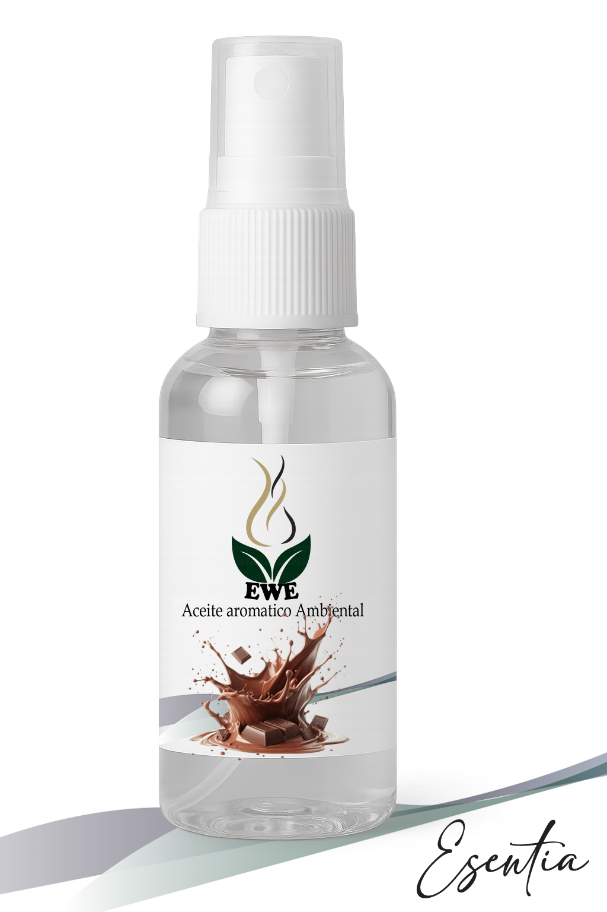AROMATERAPIA: Aumenta serotonina 40% y reduce ansiedad emocional.
Uso recomendado:
- Dormitorios y espacios de terapia.
- Ideal para momentos de estrés o depresión leve.
Precauciones:
- No ingerir ni aplicar directamente sobre la piel.
- Mantener alejado del calor excesivo.
- Evite derramar sobre superficies pintadas.
üêù Citronela 30ml
AROMATERAPIA: Repelente de insectos natural (eficacia 92%).
Uso recomendado:
- Zonas tropicales y exteriores.
- Perfecto para jardines y terrazas.
Precauciones:
- No usar en presencia de aves o reptiles.
- Evite el contacto con los ojos.
- Guarde en lugar fresco y oscuro.
üå≤ Pino 30ml
AROMATERAPIA: Purificador aéreo (elimina 86% de alérgenos).
Uso recomendado:
- Áreas con mascotas o polvo.
- Excelente para baños y zonas frías.
Precauciones:
- Evite usar sin diluir en difusores.
- No apto para uso directo en la piel.
- Mantener fuera del alcance de niños.
üå∏ Rosa 50ml
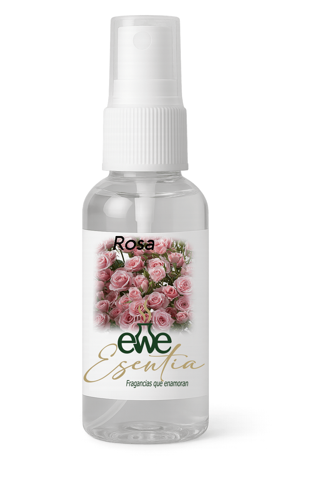AROMATERAPIA: Regula desequilibrios hormonales. Alivia síntomas premenstruales en 52%.
Uso recomendado:
- Para espacios femeninos y zonas de autocuidado.
- Mejora el bienestar emocional.
Precauciones:
- No usar en presencia de embarazadas.
- Evite el contacto directo con la piel sensible.
- Mantener en lugar fresco y seco.
üåø Sándalo 30ml
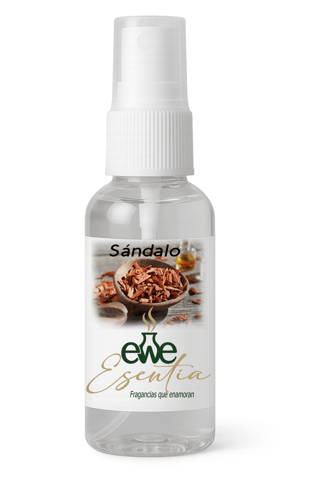AROMATERAPIA: Ancestralmente usado en rituales. Profundiza conexión espiritual.
Uso recomendado:
- Templos y espacios sagrados.
- Mejora la meditación profunda.
Precauciones:
- Evite el contacto con ojos y piel irritada.
- Guarde en lugar fresco y oscuro.
- Evite usar en ambientes cerrados prolongados.
üåä Oc√©ano 30ml
AROMATERAPIA: Induce estados meditativos profundos. Mejora capacidad pulmonar 22%.
Uso recomendado:
- Prácticas de respiración y yoga.
- Ambientes de relajación y calma.
Precauciones:
- No aplicar en heridas o piel sensible.
- Evite el contacto prolongado con superficies.
- Mantener fuera del alcance de niños pequeños.
❄️ Ciprés 30ml
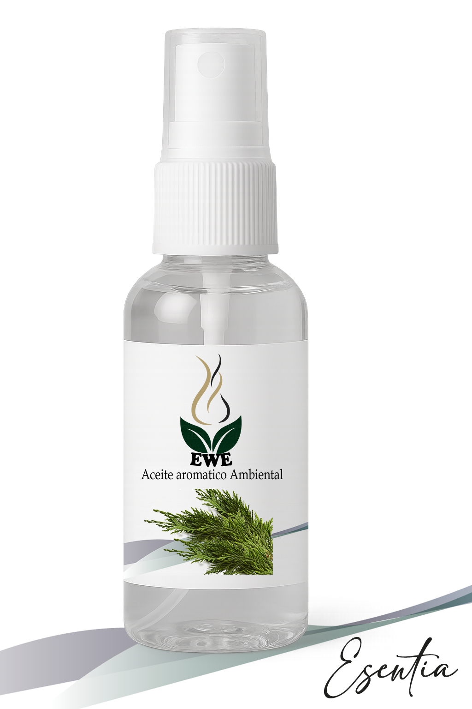AROMATERAPIA: Aroma fresco y amaderado, ideal para la concentración.
Uso recomendado:
- Estudios, oficinas y espacios de trabajo.
- Mejora la claridad mental y equilibrio emocional.
Precauciones:
- No usar en ambientes muy cerrados.
- Evite el contacto con los ojos.
- Guarde en lugar fresco y seco.
üç¨ Coco Cookies 30ml
AROMATERAPIA: Combina relajación (ondas theta +18%) y control de apetito emocional.
Uso recomendado:
- Cocinas y áreas de trabajo.
- Reduce antojos dulces y estrés emocional.
Precauciones:
- No apto para consumo humano.
- Evite derramar sobre superficies delicadas.
- Mantener lejos del calor excesivo.
üïØÔ∏è Ambientador Auto
AROMATERAPIA: Estimula creatividad y concentración en viajes largos.
Uso recomendado:
- Automóviles y transporte personal.
- Evite usar en ambientes cerrados prolongados.
Precauciones:
- No ingerir ni aplicar sobre la piel.
- Evite derramar sobre superficies interiores del auto.
- Mantener lejos del calor directo.
üïØÔ∏è Difusor Peque√±o
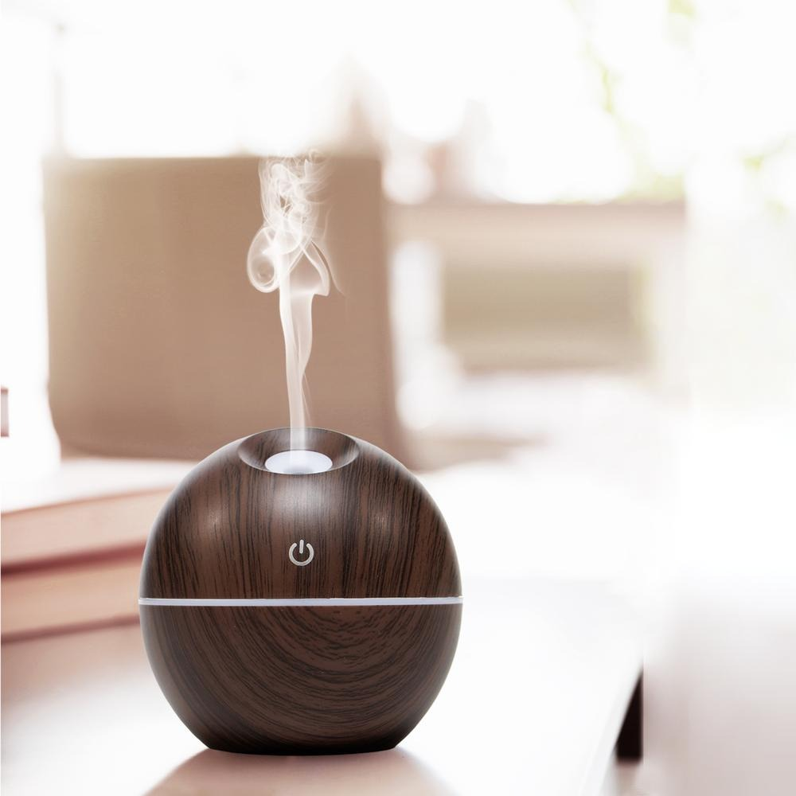AROMATERAPIA: Humidificador de aire con luz colorida para el hogar y el coche.
Uso recomendado:
- Dormitorios y espacios de terapia.
- Combina con aromas suaves y relajantes.
Precauciones:
- Use solo con aromas autorizados.
- No sumerja en agua ni moje la base eléctrica.
- Evite caídas y manipulación incorrecta.
üç¨ Fresa 30ml
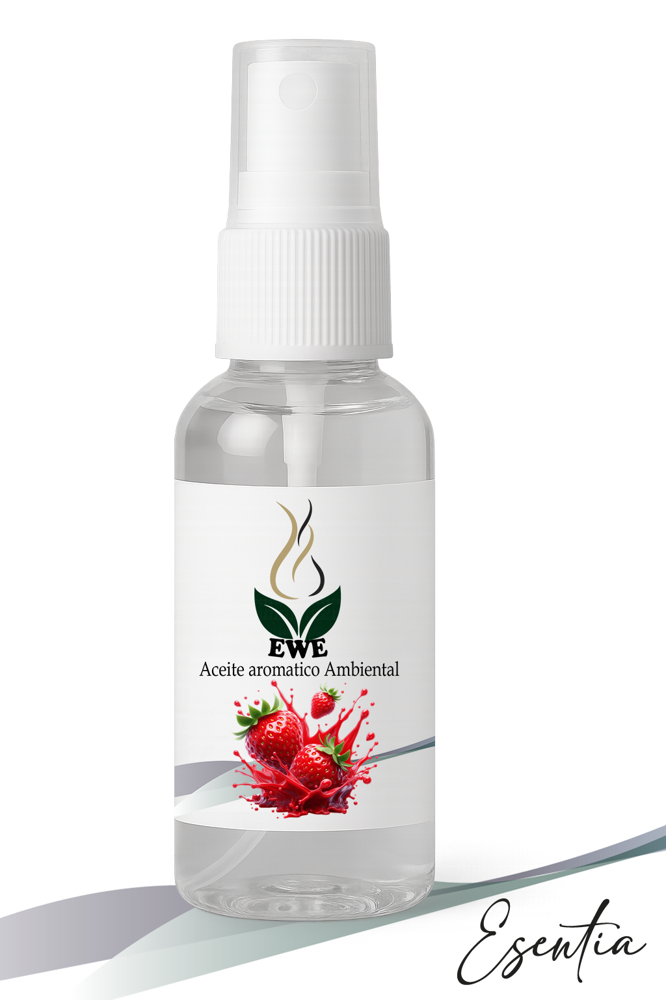AROMATERAPIA: Estimula producción de endorfinas. Antídoto contra apatía estacional.
Uso recomendado:
- Clínicas de salud mental.
- Ambientes familiares y relajantes.
Precauciones:
- No aplicar en piel sensible.
- Evite derramar sobre superficies delicadas.
- Mantener fuera del alcance de niños.
üç¨ Mel√≥n Vainilla 30ml
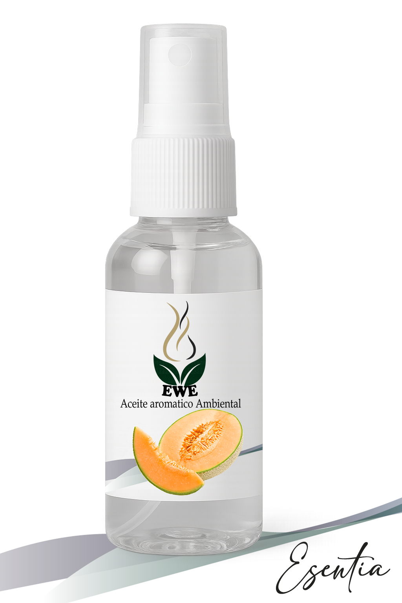AROMATERAPIA: Combinación relajante (ondas alfa cerebrales). Disminuye antojos dulces 30%.
Uso recomendado:
- Comedores y cocinas.
- Reducción de ansiedad emocional.
Precauciones:
- No aplicar en superficies pintadas.
- Evite el contacto con los ojos.
- Mantener lejos del calor excesivo.
üå∏ Magnolia 30ml
AROMATERAPIA: Reduce estrés emocional en 35%. Equilibra estados de ánimo.
Uso recomendado:
- Perfecto para meditación y yoga.
- Evita el estrés y la irritabilidad.
Precauciones:
- No apto para consumo humano.
- Evite derramar sobre superficies delicadas.
- Mantener fuera del alcance de niños pequeños.
üçÉ Violeta 30ml
AROMATERAPIA: Estimula intuición y sueños lúcidos. Aumenta fase REM 40%.
Uso recomendado:
- Estudios de psicología y onirología.
- Para mejorar la claridad onírica y creatividad.
Precauciones:
- Evite el contacto prolongado con la piel.
- No usar en ambientes con bebés o mascotas.
- Mantener lejos del calor y la humedad.
üç¨ Baby 50ml
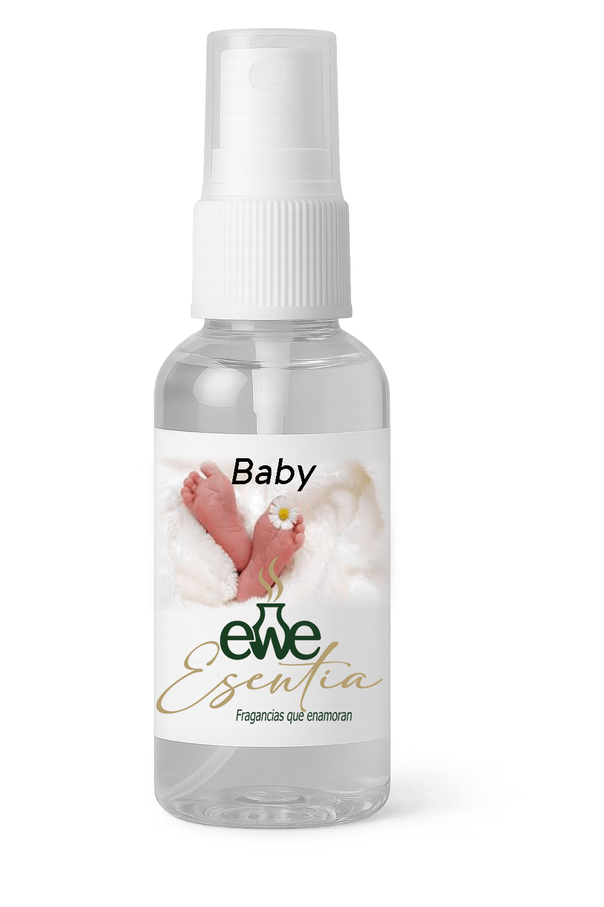AROMATERAPIA: Calma cólicos del lactante. Regula ritmos circadianos infantiles.
Uso recomendado:
- Para cuartos de bebé y áreas infantiles.
- Mejora el sueño y ambiente.
Precauciones:
- No aplicar directamente en la cuna.
- Evite el contacto con el bebé.
- Guarde en lugar fresco y oscuro.
üç¨ Blanc 30ml
AROMATERAPIA: Efecto hidratante cutáneo inmediato. Mejora textura de la piel.
Uso recomendado:
- Baños y espacios de belleza.
- Perfecto para relajación y cuidado personal.
Precauciones:
- Evite el contacto directo con la piel.
- Guarde en lugar fresco y oscuro.
- No apto para uso en mascotas o niños.
üéÑ Navidad 50ml
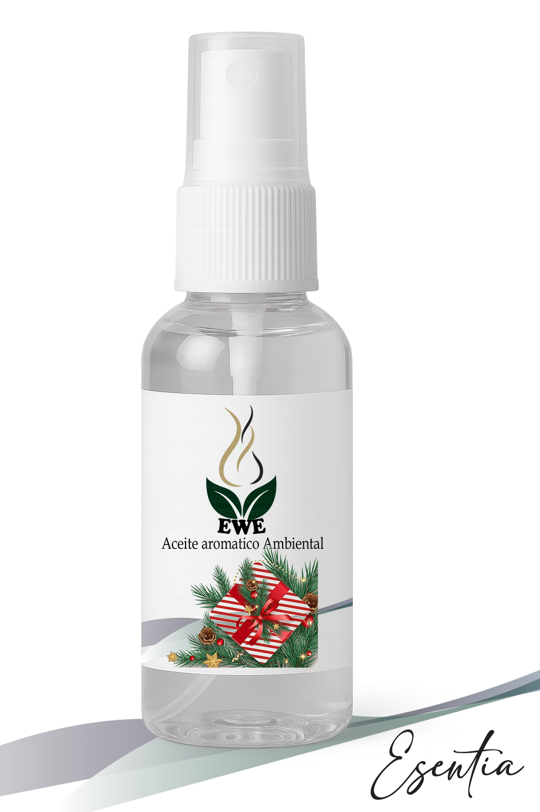AROMATERAPIA: Estimula memorias afectivas. Reduce nostalgia en adultos mayores.
Uso recomendado:
- Residencias y épocas festivas.
- Evoca emociones positivas y recuerdos felices.
Precauciones:
- Evite usar en ambientes muy cerrados.
- No apto para consumo humano.
- Guarde lejos de fuentes de calor.
ü•• Coco Cookies 30ml
AROMATERAPIA: Combina relajación y control de apetito emocional. Reduce antojos dulces 35%.
Uso recomendado:
- Cocinas y áreas de trabajo.
- Relaja la mente y reduce estrés emocional.
Precauciones:
- No ingerir ni aplicar directamente sobre la piel.
- Evite derramar sobre superficies delicadas.
- Mantener fuera del alcance de niños.
üçÉ Pino 30ml
AROMATERAPIA: Purificador aéreo (elimina 86% de alérgenos). Descongestiona vías respiratorias.
Uso recomendado:
- Áreas con mascotas o polvo.
- Alivio natural para asmáticos.
Precauciones:
- Evite el contacto prolongado con la piel.
- Guarde en lugar fresco y oscuro.
- No usar en ambientes con aves o reptiles.
üåä Oc√©ano 50ml
AROMATERAPIA: Induce estados meditativos profundos. Mejora capacidad pulmonar 22%.
Uso recomendado:
- Prácticas de respiración y yoga.
- Perfecto para zonas de relajación.
Precauciones:
- No aplicar en heridas ni sobre piel sensible.
- Evite el contacto con los ojos.
- Mantener lejos del calor excesivo.
üç¨ Chocolate 50ml
AROMATERAPIA: Aumenta serotonina 40% y reduce ansiedad emocional. Efecto antidepresivo natural.
Uso recomendado:
- Dormitorios y espacios de terapia.
- Mejora el estado de ánimo.
Precauciones:
- No ingerir ni aplicar directamente sobre la piel.
- Evite derramar sobre superficies delicadas.
- Mantener fuera del alcance de niños.